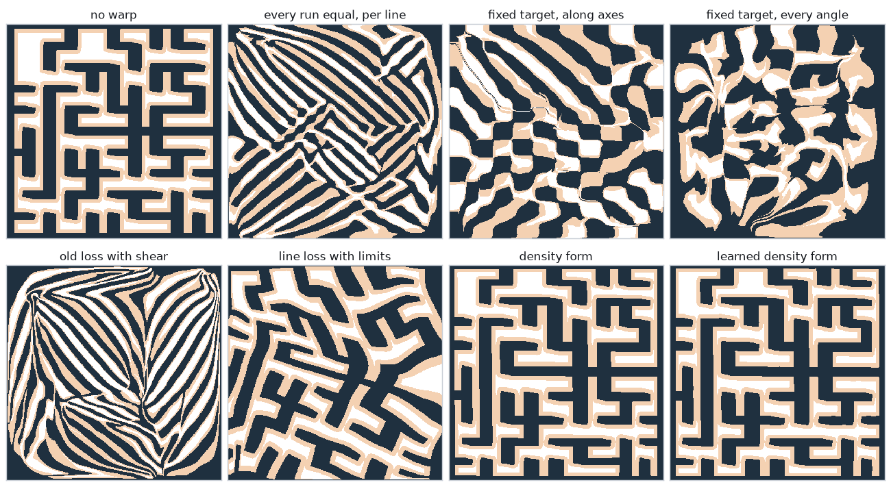
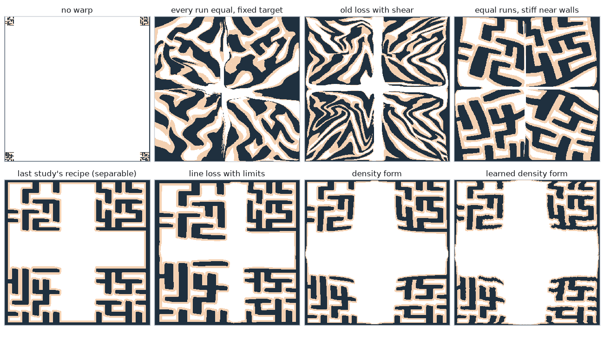
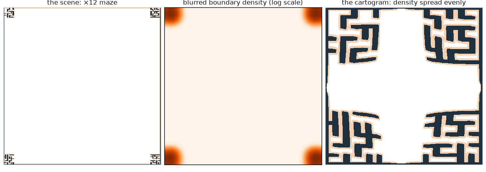
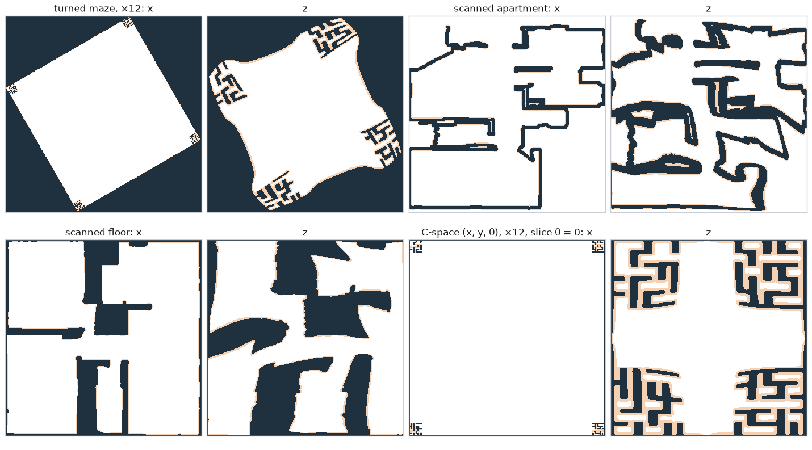

You asked for a warp that reaches 3-D and C-space, using a new rule: every run on a line has the same length. Taken literally, that rule brings the stripes back. Your fallback worked once its limits took the right form: stiff near walls, only runs that are too long get pushed, and a bound on the stretch. That shear-capable line loss comes close to last study's best map on the ×12 mazes, and beats it on the walls inside the quadrants. A second form of the idea, which spreads the obstacle boundary evenly over the box, needs no training and does about as well there. That second form is the one that generalizes: it handles a turned maze where a separable map and the line loss both fail, and it runs unchanged on scanned floor plans and the (x, y, θ) C-space. Where a scene has no large unevenness it costs a little, and it did not help the 6-D arm.
Nothing here is a planning result. As you said, no NTField was trained. Maps are judged by geometry and by how well a small network learns the speed near walls, a score that ranks last study's maps close to their planning results. The new maps may still fail in ways these scores miss.
The polylines of last study only exist in 2-D. This study reads a line through a collision oracle instead, so one piece of code serves a floor plan, a 3-D room, or a C-space. A line in the warped space z is mapped back to the scene, the oracle says free or obstacle along it, and each crossing is pinned down by root finding on the clearance. A run length is a difference of crossings, and its gradient comes from implicit differentiation, so the step function itself is never smoothed:
The maps are also new: a stack of monotone layers (“coupling”) and a many-step residual flow (“flow”). Both work in any dimension, can shear, and send the box onto itself. The first cannot fold by construction.
How maps are judged without a field. Last study showed that a lower loss does not mean a better map, so the loss is not the score. A network of ntrl-demo's size regresses the speed through the map, then is tested on a fixed set of points near walls, the same points for every map. That “R² near walls” ranks last study's maps close to their planning results (last section). Next to it sits the wall zone: how much each wall's slow zone is stretched in z, where last study traced failures to zones that got too thin.
Asked for directly, the loss delivers: along the axes, the spread of runs inside a line falls from 0.86 to 0.40, and long runs from 0.30 of the line length to 0.03. But the map does it by turning the maze into herringbone stripes (second panel), and the speed near walls gets much harder to learn: 0.984 with no warp, 0.553 through the stripes.
Why stripes. If every run along an axis has length ℓ, then shifting any point by ℓ along that axis swaps free and obstacle. Only checkerboard-like patterns and diagonal stripes can do that, and a maze cannot become a checkerboard, because its free cells would touch only at corners. So diagonal stripes are close to the true minimum of the loss, and the warning in your message was right: this error is close to the old one.
The runs are equal only along the axes. The chart reads the same maps along lines at every angle, which the fit never saw. The spread of run lengths halves along the axes and does not move at every angle. The map did not make the runs more equal. It turned the long runs away from the axes that the loss reads. Fourier rows at random angles have no preferred axis, so that turn buys the field nothing.

What changed the behaviour. A learning rate of 10⁻³ blew the map up within 100 steps, so everything here uses 10⁻⁴. A target that follows the batch chases the runs down to finer and finer stripes, so a fixed target stops that drift. Lines at every angle stop the stripes, because a stripe then pays for its long run along its own direction: the maze becomes rounded blobs, and anisotropy at every angle falls for the first time (1.83 to 1.40). Near walls that map still scores only 0.789.
The 10×10 maze has little to gain. It is already nearly a lattice, so a warp can only spend what it has. By the rule I fixed before the first result, nothing passes, because no map that keeps the walls learnable makes the runs 30 % more equal. The line loss with all its limits simply turns this maze by about 20°, the free win from reading along the axes: long runs almost vanish (0.01) and the walls stay straight, but it scores 0.833 near walls. With lines at every angle the same limits leave the maze nearly alone.
| Method | Runs more equal | No stripes | Valid map | Speed as learnable | Walls as learnable | R² near walls | R² over the box | Peak spacing spread | Anisotropy |
|---|---|---|---|---|---|---|---|---|---|
| Every run of a line equal, as asked (coupling) | fail | fail | pass | fail | fail | 0.553 | 0.915 | 0.39 | 9.7 |
| Every run of a line equal, as asked (flow) | fail | fail | pass | fail | fail | 0.668 | 0.932 | 0.42 | 8.7 |
| Fixed target 0.10 (coupling) | fail | pass | pass | fail | fail | 0.365 | 0.946 | 0.41 | 5.6 |
| Fixed target 0.10, every angle (coupling) | fail | pass | pass | fail | fail | 0.789 | 0.954 | 0.49 | 4.0 |
| Old loss with shear (coupling) | fail | fail | pass | fail | fail | 0.287 | 0.819 | 0.58 | 16.5 |
| Old loss, update size capped | fail | fail | pass | fail | fail | 0.296 | 0.805 | 0.70 | 19.6 |
| Old loss, stiff near walls | fail | fail | pass | fail | fail | 0.933 | 0.963 | 0.47 | 2.6 |
| Equal runs, worst run of a line weighted (power 2) | fail | fail | pass | fail | fail | 0.301 | 0.937 | 0.42 | 6.7 |
| Equal runs, stiff near walls | fail | fail | pass | pass | fail | 0.764 | 0.990 | 0.40 | 1.4 |
| Equal runs, every angle, stiff near walls | fail | pass | pass | pass | pass | 0.983 | 0.990 | 0.48 | 1.2 |
| Long runs pushed, stiff near walls, stretch bound 8 | fail | fail | pass | pass | fail | 0.833 | 0.988 | 0.43 | 1.4 |
| Long runs pushed, stiff near walls, stretch bound 8, every angle | fail | pass | pass | pass | pass | 0.982 | 0.990 | 0.46 | 1.3 |
| Cartogram, h 2, ε 0.3 | fail | fail | pass | pass | pass | 0.981 | 0.990 | 0.52 | 1.1 |
| Learned flow, h 2, ε 0.3, transport 1 | fail | fail | pass | pass | pass | 0.982 | 0.990 | 0.52 | 1.1 |
Rule, fixed in the README before the first result: runs at least 30 % more equal on three measures, no stripes, det J > 0 at every test point, and the speed no harder to learn. After the first two results I tightened “no stripes” to include lines at every angle, because the axis-only index could not see diagonal stripes. “Walls as learnable” is the near-wall score, added later because R² over the box favours maps that give walls little room.
So I ran your fallback on the 10×10 quadrants pushed apart by a ×12 band, where a warp is really needed. The old largest-minus-smallest loss with a shear-capable map gives stripes again (0.686 near walls, anisotropy 7.6). Then the limits, one at a time:
One problem remained: the band vanished. Near the walls along the band the same map scores only 0.140. There were two reasons. A line through a quadrant has about 13 runs, so at a target of 0.10 those alone fill the box, and pushing short runs up squeezes everything else. And runs along the band stay long however thin it gets, so the loss can only cut them by narrowing the band until few lines fall inside. Two more limits fixed that:
Together, over three fit seeds: 0.929–0.969 near walls, wall zones 5.01 / 6.06, anisotropy 1.17. Last study's separable recipe gets 0.970 and 4.74 / 5.82. The split matters: on quadrant walls this map scores 0.962–0.964, above the recipe's 0.956 on every seed, and on band walls 0.912–0.971 against 0.975, below it on every seed. So it comes close without quite matching it. A bound of 6 gives 0.968 on its one seed, with the most even wall zones of any map here (spread 0.04).

The line loss works here, but it needs several limits to keep it from fighting the scene: axes reward a turn, a crossing's gradient cannot see a wall the line has not touched yet, and nothing tells the map to leave a healthy region alone. Going back to your reason for the idea suggests another route.
On one line, “every run the same length” says the crossings are evenly spaced, which is histogram equalization of the crossings. Across all lines, by Crofton's formula, the crossing rate at a point is the density of obstacle boundary there. So the statement for a whole box, in any dimension, is: push the boundary density to uniform. That is your “speed evenly distributed”, and it is a known object, a density-equalizing map or cartogram (Gastner and Newman, 2004), with obstacle boundary in the role of population:
It takes seconds, with no training. And what the line loss had to be forced into comes for free:
One design choice has a control: crossings on the frame of the box are left out, because every line ends there anyway. With the frame left in, it takes the largest share of the z box: the median wall zone falls from 5.52 to 3.60, and near quadrant walls the score falls from 0.955 to 0.868.

On the mazes last study was built for, both forms come close to the recipe. The line loss does best on quadrant walls, the density form needs no training, and neither beats the recipe overall on the 10×10 quadrants. All values in these tables use the same regression seed:
| ×12 maze (10×10 quadrants) | R² near walls | quadrant walls | band walls | R² over the box | Wall zone q05 / median | Zone spread | Anisotropy | Long-run share |
|---|---|---|---|---|---|---|---|---|
| Last study's recipe (separable) | 0.970 | 0.956 | 0.975 | 0.989 | 4.74 / 5.82 | 0.08 | 1.11 | 0.61 |
| Line loss with limits (3 fit seeds) | 0.929–0.969 | 0.962–0.964 | 0.912–0.971 | 0.988 | 5.01 / 6.06 | 0.15 | 1.17 | 0.47 |
| Density form (no training) | 0.950 | 0.955 | 0.946 | 0.988 | 4.55 / 5.52 | 0.10 | 1.35 | 0.65 |
| Learned density form (3 fit seeds) | 0.791–0.841 | 0.932–0.941 | 0.721–0.795 | 0.983 | 4.46 / 5.52 | 0.14 | 1.93 | 0.67 |
| R² near walls | No warp | Last study's recipe | Line loss with limits | Density form |
|---|---|---|---|---|
| 22×22 quadrants, ×12 | −1.008 | 0.875 | 0.889 | 0.852 |
| Plus maze | 0.817 | 0.861 | 0.712 | 0.847 |
One density setting, h = 2 cells and ε = 0.3, was the best of 12 on the ×12 maze and carries over to every other scene. It takes seconds, plus about a minute for the measurements. It finds its own stretch. Last study's total-variation penalty adapted to the gap, and this map does too: its stretch grows with the gap and tracks the recipe's (chart), with no setting changed. The line loss needs its stretch bound: without one it gets 0.532 near walls, and 6, 8 and 12 give 0.968, 0.945 on average and 0.947. On six fresh mazes the density form stays within 0.003 of no warp on R² over the box.
Does the speed peak more periodically? Where the scene is uneven, yes. On the ×12 maze the spread of spacing between speed peaks falls from 1.11 to 0.56 with the density form and 0.53 with the line loss. The spread of crossings over the box falls from 2.82 to 0.85. On the plain 10×10 maze the density form leaves it unchanged (0.51 to 0.52), because it was already even at that scale. Runs inside one line are still not equal, as the rule literally asks. That is the part a map cannot deliver without stripes.
This is the test of your point that a no-shear map will not generalize. On the ×12 maze turned 30°, the band is oblique. The separable flow fails, as you said it would: its wall zone stays at 1.22, and the regression sticks exactly as it does with no warp (−0.935 near walls). The density form reaches 5.20 and 0.911. The line loss with limits also fails here (1.37 and 0.729): the dark corners outside the turned maze are long obstacle runs too, and the map spends itself reshaping them instead of growing the quadrants. Reading lines at every angle does not rescue it (1.17 and 0.569).
In the whole C-space (x, y, θ) of the maze robot, the density form works with the same code and settings. The ×4 maze goes from 0.840 near walls to 0.975, and the ×12 maze from −0.988 to 0.886.
On the two scanned floor plans the map does what it should: walls and intricate areas grow, open rooms shrink, everything stays connected. Near walls the apartment goes from 0.965 to 0.983 and the floor from 0.975 to 0.962. One warning: on the floor, 5 % of wall points are compressed about 4× (wall zone 0.24), the kind of thin zone last study traced to walking into walls. Where a scene has no large unevenness the warp costs a little: near walls the 3-D room goes from 0.985 to 0.972, the 3-D apartment from 0.877 to 0.843, the plain 10×10 maze from 0.984 to 0.981. So it helps where open space dominates, and should not be applied blindly.

| Scene | Near walls: no warp | cartogram | flow | separable flow | line loss, stiff | Over the box: no warp | cartogram | Wall zone q05 | Wall zone median | Median, separable | Crossing spread, no warp | Crossing spread | Peak spacing, no warp | Peak spacing | Anisotropy | Run |
|---|---|---|---|---|---|---|---|---|---|---|---|---|---|---|---|---|
| 10×10 quadrants, ×12 | -0.935 | 0.950 | 0.837 | – | 0.969 | -0.033 | 0.988 | 4.55 | 5.52 | – | 2.82 | 0.85 | 1.11 | 0.56 | 1.3 | 20261107T110317Z-b2feb5ad |
| 22×22 quadrants, ×12 | -1.008 | 0.852 | – | – | 0.889 | -0.043 | 0.948 | 3.17 | 4.30 | – | 2.66 | 0.70 | 1.41 | 0.64 | 1.4 | 20261107T111118Z-38b5060c |
| plus maze (22×22) | 0.829 | 0.847 | – | – | 0.712 | 0.947 | 0.946 | 0.89 | 1.18 | – | 0.78 | 0.58 | 0.66 | 0.57 | 1.2 | 20261107T111132Z-eb180944 |
| 10×10 quadrants, ×12, turned 30° | -0.935 | 0.911 | 0.748 | -0.935 | 0.729 | -0.032 | 0.966 | 2.78 | 5.20 | 1.22 | 2.60 | 1.80 | 1.67 | 0.99 | 3.2 | 20261107T111019Z-8f73556c |
| 10×10 quadrants, ×4, turned 30° | 0.623 | 0.929 | – | – | – | 0.921 | 0.981 | 1.57 | 2.30 | – | 2.40 | 1.41 | 1.24 | 0.82 | 1.9 | 20261107T111036Z-5b69c5d6 |
| 10×10 maze, turned 30° | 0.978 | 0.975 | 0.975 | 0.975 | – | 0.988 | 0.986 | 0.93 | 1.15 | 1.15 | 0.96 | 0.75 | 0.30 | 0.33 | 1.2 | 20261107T111102Z-bb0d9748 |
| 10×10 maze | 0.984 | 0.981 | 0.982 | – | 0.833 | 0.991 | 0.990 | 0.85 | 1.05 | – | 0.31 | 0.27 | 0.51 | 0.52 | 1.1 | 20261107T110413Z-b4f09e6e |
| Scanned floor (2-D) | 0.975 | 0.962 | – | – | – | 0.999 | 0.999 | 0.24 | 2.43 | – | 1.23 | 1.00 | 0.34 | 0.43 | 2.5 | 20261107T111216Z-68e4174f |
| Scanned apartment (2-D) | 0.965 | 0.983 | 0.983 | – | 0.939 | 0.996 | 0.998 | 0.97 | 1.82 | – | 1.40 | 0.85 | 0.53 | 0.56 | 2.0 | 20261107T111226Z-23a1f418 |
| Scanned apartment (3-D) | 0.877 | 0.843 | 0.832 | – | – | 0.975 | 0.974 | 0.81 | 1.25 | – | 0.76 | 0.52 | 0.63 | 0.65 | 1.7 | 20261107T111944Z-cd1409d8 |
| Room of slabs at random angles (3-D) | 0.985 | 0.972 | 0.974 | – | – | 0.996 | 0.993 | 1.01 | 1.32 | – | 0.76 | 0.69 | 0.39 | 0.42 | 1.8 | 20261107T112050Z-b3287220 |
| 10×10 maze, whole C-space (x, y, θ) | 0.988 | 0.986 | 0.986 | – | – | 0.993 | 0.992 | 0.85 | 1.05 | – | 0.29 | 0.25 | 0.65 | 0.65 | 1.3 | 20261107T112113Z-9642a7ef |
| 10×10 quadrants ×4, whole C-space (x, y, θ) | 0.840 | 0.975 | 0.970 | – | 0.957 | 0.968 | 0.992 | 1.93 | 2.32 | – | 1.59 | 0.82 | 0.93 | 0.64 | 2.4 | 20261107T112205Z-b391bede |
| 10×10 quadrants ×12, whole C-space (x, y, θ) | -0.988 | 0.886 | – | – | – | -0.034 | 0.992 | 4.41 | 5.52 | – | 1.74 | 0.83 | 1.09 | 0.62 | 5.7 | 20261107T123505Z-c75e3c6a |
A grid cartogram cannot reach high dimensions, but the same map has a form that can. A map of the box pushes a density p to uniform exactly when p = |det J|, so the cartogram is the maximum-likelihood normalizing flow of the blurred boundary density. A Fourier-feature network learns it from crossing points alone, each moved by Gaussian noise of width h, with no grid and no line scan during training. A small term, E|φ(x) − x|², picks the map that moves points least.
On the 3-D room, the 3-D apartment, the floor plan and the small C-space it lands on nearly the same map as the grid version. The ×12 maze is harder. Over the box it gets R² 0.981–0.985 over three seeds, with wall zones 4.46 / 5.52, in 5 minutes. But near walls it scores 0.823 against 0.950 for the grid map, and most of that gap is on band walls (0.769 against 0.946). The network's map is slightly ragged next to walls. Without the transport term it spikes (largest stretch in the hundreds), and more capacity makes things worse, not better (0.211 near walls with 10 layers at 256 wide).
A correction: during the run I reported that this flow made stripes on the 10×10 maze, and built an explanation on it. It did not. Those two runs had been sent to the line-fit script by a routing bug, and the registry notes on them say so. The real flow leaves that maze nearly unchanged.
The UR5e among three cupboards, 6-D, read through the repository's own collision geometry at about 600,000 configurations per second. Everything runs, and the learned map is valid. It does not help. At coarse blur it stays near the identity, and at fine blur it makes the speed harder to learn: R² falls from 0.63 to 0.19 as anisotropy rises to 61. I only ran the learned density form here, not the line loss.
The reason fits the theory. This method fixes large-scale unevenness, like a band of open space, and the arm's joint box has little of it: the spread of crossings is 0.37 with no warp, against 2.82 on the ×12 maze. Whatever makes the arm hard is not that. The task also lives in a small part of the joint box, which a uniform density does not know about. Weighting crossings by where the task is would be the next thing to try. A quick rescaling of each joint axis changed nothing either (an unregistered scratch test, so not a result).
I checked the near-wall score against last study's maps, whose planning results are known. Its rank correlation with planning is +0.87 on the plus maze, +0.90 and +0.93 on the ×12 mazes, with no warp included.
| Maze | Map | Planning % | R² near walls | R² over the box | Wall zone q05 | Wall zone median | Fit run |
|---|---|---|---|---|---|---|---|
| plus maze | free ResNet, axis lines, final code, quadrant stretch 6 | 22.6 | 0.052 | 0.459 | 0.21 | 0.88 | 20261107T014050Z-68139c88 |
| plus maze | free ResNet, any-angle lines, s 6 | 38.9 | 0.171 | 0.513 | 0.28 | 0.99 | 20261106T182055Z-f78db163 |
| plus maze | ResNet, anisotropy limit 12 | 59.3 | 0.427 | 0.754 | 0.30 | 0.91 | 20261106T204432Z-4719c146 |
| plus maze | the recipe without TV (bound 2, dilation) | 60.4 | 0.571 | 0.904 | 0.26 | 0.91 | 20261107T004109Z-cc1ab02b |
| plus maze | separable, stretch bound 1.25, no TV | 65.7 | 0.721 | 0.928 | 0.37 | 0.90 | 20261106T184601Z-51cfa23a |
| plus maze | ResNet, limit 12 + TV 0.05 | 66.9 | 0.547 | 0.803 | 0.40 | 0.86 | 20261106T192743Z-e7187817 |
| plus maze | ResNet, anisotropy limit 4 | 67.4 | 0.519 | 0.834 | 0.28 | 0.84 | 20261106T210631Z-b2e21683 |
| plus maze | identity | 68.1 | 0.803 | 0.947 | 1.00 | 1.00 | – |
| plus maze | triangular, TV 0.05 | 70.0 | 0.744 | 0.918 | 0.41 | 1.13 | 20261106T194948Z-8eca6785 |
| plus maze | separable, low-pass, bound 1.25 | 76.0 | 0.772 | 0.935 | 0.44 | 0.99 | 20261106T190520Z-e99bff4e |
| plus maze | separable, TV 0.05 | 78.1 | 0.820 | 0.942 | 0.46 | 1.14 | 20261106T191103Z-20bc6d11 |
| plus maze | the recipe without dilation (separable, TV 0.10, lines through the boundary) | 79.5 | 0.834 | 0.947 | 0.44 | 1.15 | 20261106T202057Z-49020393 |
| plus maze | the recipe: separable, TV 0.10, lines through the boundary, 1-cell dilation | 79.6 | 0.844 | 0.949 | 0.97 | 1.15 | 20261106T204722Z-21937600 |
| plus maze | separable, TV 0.40 | 80.7 | 0.752 | 0.935 | 0.70 | 1.13 | 20261106T194406Z-6ba0293e |
| plus maze | separable, stretch bound 0.70, no TV | 82.1 | 0.815 | 0.944 | 0.39 | 1.08 | 20261107T001336Z-061f576d |
| 10×10 quadrants ×12 | none | 18.1 | 0.278 | 0.976 | 0.14 | 1.45 | 20261107T013118Z-a044f93a |
| 10×10 quadrants ×12 | identity | 26.7 | -0.931 | -0.033 | 1.00 | 1.00 | – |
| 10×10 quadrants ×12 | tight | 51.7 | 0.832 | 0.972 | 2.76 | 2.76 | 20261107T010853Z-dd83a10e |
| 10×10 quadrants ×12 | the recipe: separable, TV 0.10, lines through the boundary, 1-cell dilation | 56.3 | 0.885 | 0.960 | 1.77 | 3.26 | 20261107T003114Z-148c48ac |
| 10×10 quadrants ×12 | b250 | 80.8 | 0.959 | 0.984 | 3.81 | 6.00 | 20261107T034048Z-dfada2df |
| 10×10 quadrants ×12 | b125 | 82.1 | 0.953 | 0.987 | 4.53 | 4.53 | 20261107T033713Z-5c97cdc4 |
| 10×10 quadrants ×12 | tv | 86.4 | 0.910 | 0.984 | 0.56 | 6.55 | 20261106T195052Z-f65c7c27 |
| 10×10 quadrants ×12 | range | 91.6 | 0.971 | 0.989 | 5.74 | 5.78 | 20261107T015139Z-0a3886d4 |
| 10×10 quadrants ×12 | both | 93.3 | 0.970 | 0.989 | 4.74 | 5.82 | 20261106T211609Z-1c5d3937 |
| 22×22 quadrants ×12 | identity | 24.2 | -1.008 | -0.044 | 1.00 | 1.00 | – |
| 22×22 quadrants ×12 | tight | 26.1 | 0.649 | 0.909 | 2.47 | 2.47 | 20261107T010038Z-deb9fb44 |
| 22×22 quadrants ×12 | none | 42.5 | 0.804 | 0.927 | 1.22 | 5.24 | 20261107T013114Z-8c96b58b |
| 22×22 quadrants ×12 | the recipe: separable, TV 0.10, lines through the boundary, 1-cell dilation | 45.7 | 0.765 | 0.926 | 1.58 | 4.55 | 20261107T002514Z-e702c74c |
| 22×22 quadrants ×12 | tv | 53.6 | 0.808 | 0.946 | 0.87 | 4.77 | 20261106T200207Z-23f1fb88 |
| 22×22 quadrants ×12 | b125 | 57.4 | 0.836 | 0.943 | 3.67 | 3.73 | 20261107T032705Z-dbf97ad1 |
| 22×22 quadrants ×12 | range | 60.9 | 0.865 | 0.951 | 4.42 | 4.55 | 20261107T014113Z-651d7c14 |
| 22×22 quadrants ×12 | b250 | 62.6 | 0.883 | 0.946 | 4.36 | 4.68 | 20261107T032922Z-fa6dd108 |
| 22×22 quadrants ×12 | both | 63.2 | 0.861 | 0.947 | 3.43 | 4.37 | 20261106T205633Z-a53b054d |
| Method | R² near walls | … quadrant walls | … band walls | R² over the box | Wall zone q05 | Wall zone median | Wall zone spread | Run spread in a line | Peak spacing spread | Long-run share | Long-run share, every angle | Anisotropy of runs, every angle | Crossing spread | Runs per line | Stretch q01 | Stretch q99 | Anisotropy | det J > 0 | Run |
|---|---|---|---|---|---|---|---|---|---|---|---|---|---|---|---|---|---|---|---|
| No warp | – | – | – | 0.991 | – | – | – | 0.86 | 0.51 | 0.30 | – | 1.83 | – | 10.5 | 1.00 | 1.0 | 1.0 | 1.000 | 20261107T081804Z-54d8a93e |
| Every run of a line equal, as asked (coupling) (2 seeds) | 0.553 | – | – | 0.915 | 0.16 | 0.57 | 1.04 | 0.40 | 0.39 | 0.03 | 0.12 | 1.90 | 0.30 | 24.0 | 0.06 | 12.5 | 9.7 | 1.000 | 20261107T075044Z-25c7f2b4 |
| Every run of a line equal, as asked (flow) | 0.668 | – | – | 0.932 | 0.30 | 0.83 | 0.80 | 0.46 | 0.42 | 0.05 | 0.13 | 1.92 | 0.34 | 21.5 | 0.06 | 9.0 | 8.7 | 1.000 | 20261107T075047Z-d2f1dc95 |
| Same on a log scale (coupling) | 0.081 | – | – | 0.398 | 0.17 | 0.97 | 1.30 | 0.44 | 0.55 | 0.09 | 0.17 | 2.17 | 0.35 | 50.4 | 0.05 | 15.5 | 49.5 | 1.000 | 20261107T075044Z-1cc0cd9a |
| Same on a log scale (flow) | 0.191 | – | – | 0.661 | 0.09 | 1.00 | 1.44 | 0.65 | 0.64 | 0.14 | 0.18 | 2.18 | 0.38 | 39.2 | 0.04 | 11.9 | 32.5 | 1.000 | 20261107T081842Z-455ba48f |
| All runs of a batch equal, target follows the runs (coupling) | 0.360 | – | – | 0.876 | 0.12 | 0.51 | 1.19 | 0.44 | 0.40 | 0.04 | 0.13 | 2.08 | 0.28 | 29.0 | 0.05 | 14.5 | 15.9 | 1.000 | 20261107T075044Z-5eb1a0e5 |
| Fixed target 0.10 (coupling) | 0.365 | – | – | 0.946 | 0.11 | 0.54 | 1.05 | 0.52 | 0.41 | 0.00 | 0.06 | 1.47 | 0.46 | 15.3 | 0.06 | 14.0 | 5.6 | 1.000 | 20261107T152713Z-fe573929 |
| Fixed target 0.10, no shear (separable) | 0.293 | – | – | 0.960 | 0.04 | 0.24 | 1.24 | 0.72 | 0.55 | 0.35 | 0.20 | 1.55 | 1.59 | 6.9 | 0.06 | 16.3 | 3.0 | 1.000 | 20261107T165913Z-0ec6d98d |
| Fixed target 0.10, every angle (coupling) (2 seeds) | 0.789 | – | – | 0.954 | 0.27 | 0.93 | 0.74 | 0.65 | 0.49 | 0.09 | 0.04 | 1.40 | 0.63 | 12.3 | 0.06 | 10.9 | 4.0 | 1.000 | 20261107T092451Z-28bcaa70 |
| Fixed target 0.07, every angle (coupling) | 0.878 | – | – | 0.959 | 0.36 | 0.85 | 0.55 | 0.60 | 0.41 | 0.09 | 0.04 | 1.47 | 0.50 | 13.5 | 0.07 | 7.7 | 3.4 | 1.000 | 20261107T093239Z-0750b887 |
| Fixed target 0.10, every angle (flow) | 0.787 | – | – | 0.956 | 0.26 | 1.04 | 0.79 | 0.63 | 0.49 | 0.12 | 0.06 | 1.48 | 0.61 | 12.8 | 0.06 | 10.6 | 4.2 | 1.000 | 20261107T094542Z-3fe7dcaf |
| Fixed target 0.07, every angle (flow) | 0.849 | – | – | 0.960 | 0.37 | 0.99 | 0.64 | 0.62 | 0.48 | 0.13 | 0.06 | 1.54 | 0.51 | 13.8 | 0.06 | 7.3 | 3.8 | 1.000 | 20261107T094553Z-541f32e9 |
| Pair form, shift 0.10 | 0.090 | – | – | 0.932 | 0.04 | 0.28 | 1.57 | 0.58 | 0.42 | 0.00 | 0.02 | 1.08 | 0.54 | 14.8 | 0.06 | 15.2 | 4.5 | 1.000 | 20261107T165902Z-5cbadfbe |
| Old loss with shear (coupling) | 0.287 | – | – | 0.819 | 0.14 | 0.64 | 1.04 | 0.55 | 0.58 | 0.07 | 0.14 | 2.00 | 0.43 | 28.3 | 0.04 | 13.6 | 16.5 | 1.000 | 20261107T154023Z-522910da |
| Old loss with shear, high frequencies (coupling) | 0.130 | – | – | 0.766 | 0.12 | 0.71 | 1.25 | 0.61 | 0.67 | 0.10 | 0.17 | 2.08 | 0.46 | 33.8 | 0.04 | 13.1 | 26.3 | 1.000 | 20261107T075044Z-7952b071 |
| Old loss, update size capped | 0.296 | – | – | 0.805 | 0.16 | 0.66 | 1.05 | 0.56 | 0.70 | 0.15 | 0.16 | 2.07 | 0.41 | 29.6 | 0.04 | 12.4 | 19.6 | 1.000 | 20261107T155720Z-238392eb |
| Old loss, stiff near walls | 0.933 | – | – | 0.963 | 0.50 | 0.88 | 0.40 | 0.52 | 0.47 | 0.09 | 0.11 | 1.79 | 0.39 | 16.6 | 0.27 | 3.1 | 2.6 | 1.000 | 20261107T154329Z-ca7612ce |
| Equal runs, worst run of a line weighted (power 2) | 0.301 | – | – | 0.937 | 0.15 | 0.72 | 0.99 | 0.55 | 0.42 | 0.00 | 0.10 | 1.66 | 0.45 | 18.4 | 0.06 | 12.3 | 6.7 | 1.000 | 20261107T160758Z-3e20b948 |
| Equal runs, only the worst 5 % of runs pushed | 0.300 | – | – | 0.953 | 0.12 | 0.78 | 1.09 | 0.63 | 0.47 | 0.00 | 0.09 | 1.54 | 0.60 | 14.9 | 0.06 | 12.1 | 6.1 | 1.000 | 20261107T161103Z-62cee3cb |
| Equal runs, stiff near walls | 0.764 | – | – | 0.990 | 0.77 | 1.12 | 0.33 | 0.61 | 0.40 | 0.01 | 0.07 | 1.48 | 0.37 | 12.6 | 0.28 | 2.2 | 1.4 | 1.000 | 20261107T131609Z-7d606704 |
| Equal runs, every angle, stiff near walls | 0.983 | – | – | 0.990 | 0.82 | 0.98 | 0.11 | 0.78 | 0.48 | 0.26 | 0.06 | 1.72 | 0.36 | 10.7 | 0.58 | 1.4 | 1.2 | 1.000 | 20261107T131618Z-345fbab5 |
| Long runs pushed, stiff near walls, stretch bound 8 | 0.833 | – | – | 0.988 | 0.76 | 1.11 | 0.34 | 0.64 | 0.43 | 0.01 | 0.07 | 1.51 | 0.39 | 12.7 | 0.29 | 3.2 | 1.4 | 1.000 | 20261107T162843Z-462ca216 |
| Long runs pushed, stiff near walls, stretch bound 8, every angle | 0.982 | – | – | 0.990 | 0.73 | 0.99 | 0.15 | 0.74 | 0.46 | 0.23 | 0.05 | 1.67 | 0.37 | 10.8 | 0.46 | 1.7 | 1.3 | 1.000 | 20261107T171353Z-4031178a |
| Only long runs pushed, target from run count, stiff near walls | 0.981 | – | – | 0.990 | 0.83 | 1.01 | 0.12 | 0.71 | 0.48 | 0.20 | 0.06 | 1.64 | 0.34 | 11.2 | 0.69 | 1.4 | 1.2 | 1.000 | 20261107T145856Z-464671f8 |
| Only long runs pushed, target from run count, every angle, stiff near walls | 0.984 | – | – | 0.991 | 1.00 | 1.00 | 0.00 | 0.86 | 0.51 | 0.30 | 0.06 | 1.83 | 0.31 | 10.5 | 1.00 | 1.0 | 1.0 | 1.000 | 20261107T150211Z-33b1bd30 |
| Only runs far too long pushed, target from run count, axes | 0.353 | – | – | 0.947 | 0.13 | 0.61 | 1.03 | 0.51 | 0.35 | 0.00 | 0.07 | 1.55 | 0.46 | 16.1 | 0.06 | 10.3 | 5.8 | 1.000 | 20261107T124713Z-51ce2486 |
| Cartogram, h 2, ε 0.3 | 0.981 | – | – | 0.990 | 0.85 | 1.05 | 0.11 | 0.89 | 0.52 | 0.33 | 0.07 | 1.81 | 0.27 | 10.7 | 0.84 | 1.3 | 1.1 | 1.000 | 20261107T110413Z-b4f09e6e |
| Learned flow, h 2, ε 0.3, transport 1 | 0.982 | – | – | 0.990 | 0.86 | 1.05 | 0.10 | 0.90 | 0.52 | 0.33 | 0.07 | 1.80 | 0.27 | 10.8 | 0.83 | 1.3 | 1.1 | 1.000 | 20261107T111320Z-836c16dc |
| Learned flow, no transport | 0.981 | – | – | 0.990 | 0.86 | 1.06 | 0.11 | 0.90 | 0.53 | 0.33 | 0.07 | 1.80 | 0.27 | 10.9 | 0.83 | 1.3 | 1.1 | 1.000 | 20261107T111309Z-242ce41c |
| Method | R² near walls | … quadrant walls | … band walls | R² over the box | Wall zone q05 | Wall zone median | Wall zone spread | Run spread in a line | Peak spacing spread | Long-run share | Long-run share, every angle | Anisotropy of runs, every angle | Crossing spread | Runs per line | Stretch q01 | Stretch q99 | Anisotropy | det J > 0 | Run |
|---|---|---|---|---|---|---|---|---|---|---|---|---|---|---|---|---|---|---|---|
| No warp | – | – | – | -0.032 | – | – | – | 1.60 | 1.11 | 0.98 | – | 0.76 | – | 4.2 | 1.00 | 1.0 | 1.0 | 1.000 | 20261107T081956Z-5a1591af |
| Fixed target 0.10, along axes (coupling) | 0.533 | 0.655 | 0.469 | 0.942 | 0.83 | 7.51 | 0.93 | 0.72 | 0.53 | 0.04 | 0.11 | 1.47 | 0.60 | 16.3 | 0.01 | 36.0 | 3.1 | 1.000 | 20261107T101411Z-6c523c2d |
| Fixed target 0.10, along axes, high frequencies (coupling) | 0.425 | 0.413 | 0.416 | 0.834 | 1.06 | 10.85 | 1.17 | 1.20 | 0.91 | 0.78 | 0.75 | 1.68 | 0.61 | 32.0 | 0.00 | 39.4 | 15.0 | 0.970 | 20261107T082152Z-146c6f95 |
| Fixed target 0.10, high frequencies (flow) | -0.437 | -0.312 | -0.525 | 0.577 | 2.30 | 66.52 | 1.41 | 4.31 | 2.79 | 0.68 | 0.66 | 2.15 | 0.80 | 470.2 | 0.00 | 292.1 | 11.9 | 0.508 | 20261107T085550Z-00f626e4 |
| Fixed target 0.10, no shear (separable) | 0.620 | 0.228 | 0.780 | 0.956 | 0.08 | 1.56 | 1.67 | 0.82 | 0.63 | 0.45 | 0.44 | 1.61 | 1.38 | 6.8 | 0.02 | 33.9 | 3.0 | 1.000 | 20261107T090625Z-9c6cb766 |
| Fixed target 0.10, every angle (coupling) | 0.594 | 0.801 | 0.495 | 0.963 | 1.47 | 7.03 | 0.75 | 0.68 | 0.48 | 0.15 | 0.06 | 1.56 | 0.68 | 12.9 | 0.02 | 41.2 | 2.7 | 1.000 | 20261107T153555Z-5a21a2a2 |
| Fixed target 0.10, every angle, high frequencies (coupling) | 0.390 | 0.428 | 0.359 | 0.848 | 1.17 | 8.18 | 1.10 | 1.09 | 0.99 | 0.78 | 0.76 | 1.76 | 0.84 | 28.2 | 0.00 | 47.4 | 10.9 | 0.979 | 20261107T090827Z-77552ee6 |
| Pair form, shift 0.10 | 0.532 | 0.159 | 0.682 | 0.928 | 0.12 | 3.63 | 1.74 | 0.85 | 0.69 | 0.05 | 0.31 | 1.44 | 0.89 | 16.9 | 0.02 | 44.3 | 3.6 | 1.000 | 20261107T161329Z-c71cd89f |
| Old loss with shear | 0.686 | 0.597 | 0.717 | 0.877 | 1.26 | 7.45 | 0.96 | 0.67 | 0.64 | 0.15 | 0.18 | 1.85 | 0.41 | 22.8 | 0.01 | 36.1 | 7.6 | 1.000 | 20261107T114140Z-2cde5757 |
| Old loss, others held still within an update | 0.398 | 0.385 | 0.390 | 0.808 | 0.83 | 4.81 | 1.22 | 0.71 | 0.70 | 0.15 | 0.20 | 1.88 | 0.50 | 28.8 | 0.00 | 47.0 | 19.5 | 0.982 | 20261107T114143Z-722ec027 |
| Old loss, update size capped | 0.358 | 0.374 | 0.336 | 0.944 | 0.66 | 6.51 | 1.06 | 0.93 | 0.73 | 0.33 | 0.45 | 1.71 | 0.93 | 15.8 | 0.02 | 39.9 | 6.2 | 0.999 | 20261107T120018Z-094573da |
| Old loss, stiff near walls | 0.541 | 0.926 | 0.364 | 0.973 | 3.96 | 7.05 | 0.38 | 0.75 | 0.50 | 0.23 | 0.19 | 1.63 | 0.53 | 13.6 | 0.04 | 42.9 | 1.8 | 0.999 | 20261107T120302Z-a7638c0d |
| Old loss, stiff near walls, every angle | 0.575 | 0.715 | 0.505 | 0.969 | 1.69 | 6.18 | 0.64 | 1.09 | 0.53 | 0.45 | 0.41 | 1.53 | 0.81 | 12.1 | 0.05 | 26.1 | 1.8 | 0.999 | 20261107T130746Z-69a95963 |
| Equal runs, stiff near walls (3 seeds) | 0.396 | 0.957 | 0.140 | 0.973 | 4.83 | 7.51 | 0.36 | 0.69 | 0.49 | 0.11 | 0.08 | 1.57 | 0.40 | 13.2 | 0.04 | 56.1 | 1.4 | 1.000 | 20261107T125214Z-06ff151a |
| Equal runs, every angle, stiff near walls | 0.466 | 0.919 | 0.258 | 0.975 | 3.50 | 7.42 | 0.38 | 0.84 | 0.51 | 0.34 | 0.06 | 1.72 | 0.45 | 11.7 | 0.08 | 64.2 | 1.2 | 1.000 | 20261107T130656Z-459611ed |
| Equal runs, target 0.07, stiff near walls | 0.504 | 0.927 | 0.311 | 0.964 | 3.30 | 7.20 | 0.50 | 0.65 | 0.49 | 0.06 | 0.09 | 1.52 | 0.52 | 14.2 | 0.01 | 58.1 | 1.7 | 1.000 | 20261107T134213Z-0dfa5517 |
| Equal runs, target 0.15, stiff near walls | 0.457 | 0.904 | 0.252 | 0.974 | 2.45 | 7.68 | 0.58 | 0.79 | 0.52 | 0.25 | 0.07 | 1.65 | 0.50 | 11.8 | 0.07 | 91.4 | 1.2 | 1.000 | 20261107T135655Z-8db55760 |
| Long runs pushed, stiff near walls, stretch bound 8 (3 seeds) | 0.945 | 0.963 | 0.936 | 0.988 | 5.01 | 6.06 | 0.15 | 0.97 | 0.53 | 0.47 | 0.33 | 1.78 | 0.66 | 10.3 | 0.12 | 11.0 | 1.2 | 1.000 | 20261107T155242Z-28715037 |
| Long runs pushed, stiff near walls, stretch bound 8, every angle | 0.937 | 0.969 | 0.921 | 0.989 | 5.55 | 6.69 | 0.10 | 0.89 | 0.53 | 0.40 | 0.22 | 1.78 | 0.50 | 11.0 | 0.12 | 15.8 | 1.1 | 1.000 | 20261107T171838Z-cf2ee4cd |
| Long runs pushed, stiff near walls, stretch bound 6 | 0.968 | 0.961 | 0.971 | 0.990 | 5.33 | 5.70 | 0.04 | 1.09 | 0.54 | 0.60 | 0.50 | 1.70 | 0.80 | 9.7 | 0.16 | 6.8 | 1.1 | 1.000 | 20261107T155231Z-d9667b54 |
| Long runs pushed, stiff near walls, stretch bound 12 | 0.947 | 0.964 | 0.939 | 0.986 | 4.80 | 5.99 | 0.51 | 0.92 | 0.52 | 0.40 | 0.23 | 1.75 | 0.58 | 10.7 | 0.09 | 21.9 | 1.2 | 1.000 | 20261107T155632Z-eb508a48 |
| Only long runs pushed, target from run count, stiff near walls | 0.532 | 0.968 | 0.333 | 0.981 | 5.28 | 7.43 | 0.23 | 0.85 | 0.51 | 0.33 | 0.09 | 1.77 | 0.39 | 11.6 | 0.11 | 64.9 | 1.1 | 1.000 | 20261107T150257Z-cffca372 |
| Only long runs pushed, target from run count, every angle, stiff near walls | 0.558 | 0.937 | 0.384 | 0.978 | 4.29 | 7.31 | 0.28 | 0.83 | 0.49 | 0.31 | 0.15 | 1.65 | 0.47 | 11.9 | 0.05 | 47.2 | 1.2 | 1.000 | 20261107T150257Z-75e44bd7 |
| Only long runs pushed, target 0.15, stiff near walls | 0.187 | 0.969 | -0.169 | 0.975 | 4.67 | 7.44 | 0.36 | 0.80 | 0.51 | 0.28 | 0.08 | 1.65 | 0.41 | 11.8 | 0.09 | 95.1 | 1.2 | 1.000 | 20261107T151449Z-251f1011 |
| Only long runs pushed, target 0.15, every angle, stiff near walls | 0.366 | 0.971 | 0.091 | 0.978 | 4.16 | 7.56 | 0.34 | 0.84 | 0.51 | 0.35 | 0.09 | 1.74 | 0.43 | 11.9 | 0.10 | 61.0 | 1.2 | 1.000 | 20261107T151732Z-6478e927 |
| Equal runs, worst run of a line weighted (power 2) | 0.368 | 0.371 | 0.352 | 0.939 | 1.05 | 7.99 | 0.98 | 0.75 | 0.49 | 0.06 | 0.16 | 1.50 | 0.53 | 18.0 | 0.01 | 32.8 | 4.7 | 1.000 | 20261107T120607Z-86c4530b |
| Equal runs, worst run of a line weighted (power 8) | 0.256 | 0.369 | 0.189 | 0.908 | 0.98 | 8.51 | 0.99 | 0.87 | 0.61 | 0.26 | 0.33 | 1.45 | 0.62 | 19.1 | 0.00 | 41.5 | 4.7 | 0.993 | 20261107T121558Z-c5681ff4 |
| Equal runs, only the worst 5 % of runs pushed | 0.504 | 0.181 | 0.632 | 0.935 | 0.07 | 3.35 | 1.76 | 0.87 | 0.68 | 0.39 | 0.46 | 1.30 | 1.05 | 14.3 | 0.01 | 20.5 | 4.3 | 1.000 | 20261107T122924Z-0f75acd9 |
| Only long runs pushed, along axes | 0.661 | 0.839 | 0.576 | 0.950 | 2.96 | 7.43 | 0.60 | 0.65 | 0.48 | 0.06 | 0.12 | 1.58 | 0.44 | 16.0 | 0.02 | 34.6 | 3.3 | 1.000 | 20261107T094623Z-3a50d8c6 |
| Only long runs pushed, every angle | 0.768 | 0.871 | 0.719 | 0.965 | 1.67 | 7.68 | 0.65 | 0.70 | 0.47 | 0.19 | 0.06 | 1.65 | 0.60 | 13.6 | 0.03 | 33.9 | 2.6 | 1.000 | 20261107T101424Z-8756d693 |
| Longest runs first, along axes | 0.772 | 0.733 | 0.783 | 0.945 | 0.78 | 7.98 | 0.99 | 0.69 | 0.53 | 0.06 | 0.13 | 1.48 | 0.62 | 16.6 | 0.03 | 28.1 | 3.4 | 1.000 | 20261107T094847Z-68531796 |
| Longest runs first, every angle | 0.722 | 0.924 | 0.628 | 0.969 | 2.38 | 7.22 | 0.57 | 0.65 | 0.47 | 0.16 | 0.06 | 1.65 | 0.50 | 12.8 | 0.03 | 30.2 | 2.2 | 1.000 | 20261107T101442Z-89089b1c |
| Only runs far too long pushed, target from run count, axes | 0.872 | 0.827 | 0.889 | 0.950 | 2.36 | 7.56 | 0.64 | 0.79 | 0.58 | 0.26 | 0.25 | 1.59 | 0.62 | 15.7 | 0.03 | 31.0 | 4.0 | 1.000 | 20261107T124704Z-e6589685 |
| Only runs far too long pushed, target from run count, every angle | 0.808 | 0.924 | 0.754 | 0.969 | 3.61 | 7.63 | 0.49 | 0.75 | 0.51 | 0.23 | 0.13 | 1.64 | 0.51 | 13.6 | 0.03 | 29.7 | 2.2 | 1.000 | 20261107T124713Z-33c120a5 |
| Cartogram, h 2, ε 0.3 | 0.950 | 0.955 | 0.946 | 0.988 | 4.55 | 5.52 | 0.10 | 1.20 | 0.56 | 0.65 | 0.57 | 1.54 | 0.85 | 9.5 | 0.15 | 12.3 | 1.3 | 1.000 | 20261107T110317Z-b2feb5ad |
| Cartogram with the frame left in | 0.937 | 0.868 | 0.966 | 0.980 | 2.47 | 3.60 | 0.18 | 1.52 | 0.79 | 0.79 | 0.78 | 1.26 | 1.45 | 7.6 | 0.09 | 2.4 | 3.5 | 1.000 | 20261107T121142Z-06ddb1ea |
| Learned flow, transport 1 (small network, 3 seeds) (3 seeds) | 0.823 | 0.938 | 0.769 | 0.983 | 4.46 | 5.52 | 0.14 | 1.37 | 0.70 | 0.67 | 0.61 | 1.50 | 0.86 | 10.6 | 0.03 | 52.7 | 1.9 | 0.978 | 20261107T111414Z-0a70fd7f |
| Learned flow, no transport | 0.152 | 0.910 | -0.194 | 0.961 | 3.96 | 5.82 | 0.23 | 1.70 | 0.93 | 0.67 | 0.62 | 1.59 | 0.99 | 16.4 | 0.02 | 1060.1 | 2.7 | 0.938 | 20261107T111311Z-6b2bf02c |
| Learned flow, transport 10 | 0.912 | 0.888 | 0.921 | 0.980 | 3.30 | 4.41 | 0.14 | 1.57 | 0.79 | 0.81 | 0.78 | 1.16 | 1.25 | 8.2 | 0.11 | 9.8 | 1.8 | 0.999 | 20261107T111555Z-5b98d2b8 |
| Learned flow, 256 wide | 0.226 | 0.871 | -0.070 | 0.949 | 3.75 | 5.79 | 0.34 | 1.76 | 1.03 | 0.67 | 0.66 | 1.56 | 1.05 | 17.7 | 0.00 | 647.9 | 4.1 | 0.896 | 20261107T112921Z-5c166607 |
| Learned flow, 10 layers, 256 wide | 0.211 | 0.881 | -0.096 | 0.941 | 3.82 | 5.73 | 0.53 | 1.94 | 1.22 | 0.74 | 0.75 | 1.52 | 1.29 | 20.6 | 0.00 | 877.1 | 4.8 | 0.850 | 20261107T113338Z-56559505 |
| Learned time-integrated flow, h 1, ε 1, no transport | 0.713 | 0.497 | 0.800 | 0.954 | 3.34 | 5.60 | 0.27 | 1.59 | 0.81 | 0.72 | 0.72 | 1.22 | 1.17 | 10.9 | 0.03 | 7.0 | 2.5 | 0.959 | 20261107T104552Z-d998c6b8 |